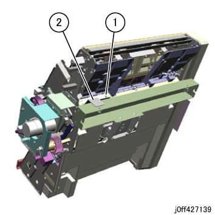
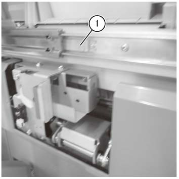
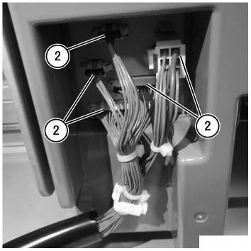

执行IOT关机步骤. 确认电源已关闭并拔掉电源插头.
打开前盖板.
拉出 the 小册子 传输 组件 直到 it 可以 go 编号 further.
拆卸 上方 Stopper 支架. (PL 27.25) (图 1)
拆卸螺钉.
拆卸 上方 Stopper 支架. (PL 27.25)

(图 1) ff427139
拉出 the 小册子 传输 组件 to a 位置 在哪里 线束 连接器 is visible. (图 2)
拆卸 hook 的 左侧 Rail 组件 (PL 27.25). (也 拆卸 hook 的 右侧 Rail 组件 (PL 27.25) at the opposite 侧面)
小心 to 不 拉出 线束.

(图 2) ffw427033
断开 线束 连接器 (x5) of 小册子 传输 组件. (图 3)

(图 3) ff427188
拆卸 小册子 传输 组件.